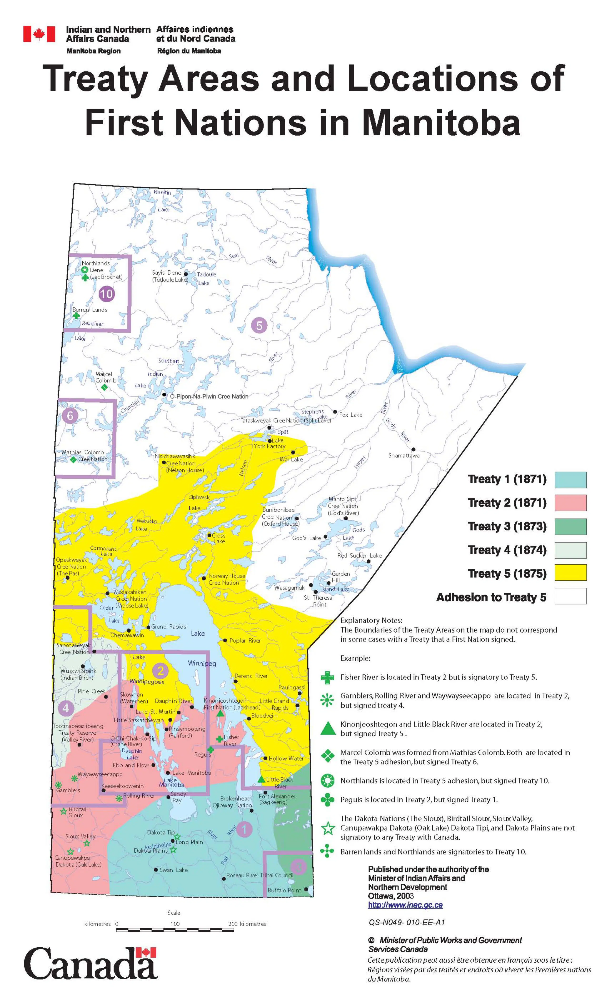

Here is an un-ordered list of Manitobas first Nations, Brokenhead Fort Alexander (Sagkeeng) Long Plain Peguis Roseau River Sandy Bay Swan
Lake
the First Nations communities on Treaty 1 are Brokenhead, Long Plain, Peguis, Roseau River, Sagkeeng, Sandy Bay, and Swan Lake.
-
- The Long Plain First Nation (Ojibwe: Gaa-ginooshkodeyaag) is an Ojibway and Dakota First Nations band government whose reserve is
located in the Central Plains Region of Manitoba, Canada.
-
- Peguis First Nation is the largest First Nations community in Manitoba, Canada, with a population of approximately 10,300 people.
The members of Peguis are of Saulteaux and Cree descent. The main reserve,Peguis 1B, islocated approximately 196 kilometres
-
- Roseau River Anishinabe First Nation is a First Nation in southern Manitoba, Canada, situated around the Roseau River. Its main
reserve is Roseau River
-
- The Sagkeeng First Nation is a Treaty-1 First Nation in the Eastman Region of Manitoba, Canada, that is composed of the Anishinaabe
people indigenous to the area at or near the Fort Alexander Indian Reserve #3 located along the Winnipeg River and Traverse Bay.
-
- The Sandy Bay Ojibway First Nation is situated on Reserve No. 5, a 16,456 acre site on the western shore of Lake Manitoba. It is
165 kilometers northwest of Winnipeg and 90 kilometers from Portage la Prairie.
-
- Swan Lake First Nation is located in South Central Manitoba along junction Highway #23 and #34. SLFN people are known as Anishinabe
people, meaning “original-peoples”; their native language is Saulteaux
